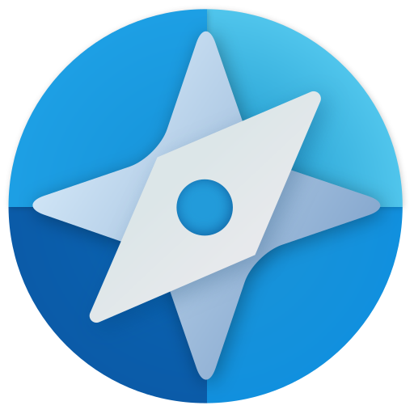
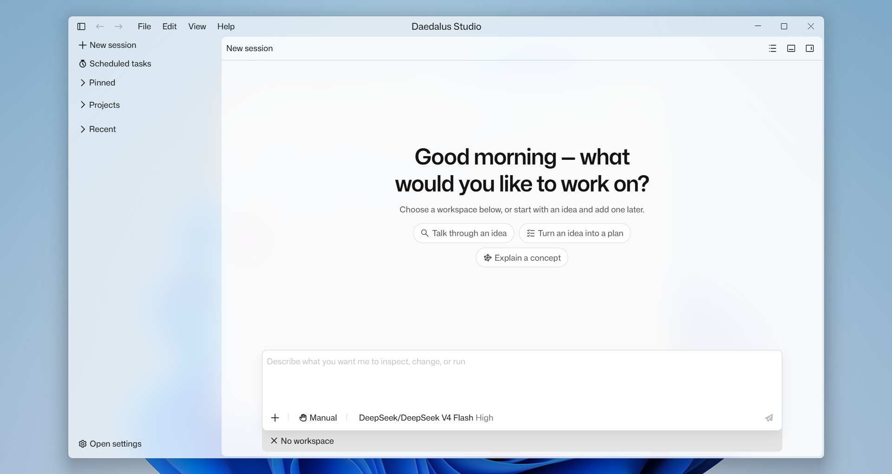

Codebases
Files, Git history, diagnostics, terminals, and team instructions in one working context.

DAEDALUS STUDIO GITHUB01 THE AGENT WORKBENCH
Daedalus Studio is a workspace for agents that understand context, take action, and prove the result.

02 NOT A CHAT WINDOW
A task should be more than an answer. It should have a plan, bounded actions, a reviewable change set, and an honest verification result.
03 THE WORK LOOP
Follow the agent’s work without losing the right to decide what happens next.
REQUEST
PROJECT CONTEXT
Reading project conventions, workspace files, session context, and available tools.
04 CONTROL IS A FEATURE
Daedalus separates reading, proposing, writing, and destructive actions. You see the intent, inspect the evidence, then decide how far an agent can go.
05 PROJECT-AWARE BY DEFAULT
Files, Git history, diagnostics, terminals, and team instructions in one working context.
MCP servers and Skills extend an agent without slipping past its review and approval boundaries.
When the project is a game, go beyond code: scenes, resources, editor patches, and headless checks.
06 DEPTH WITHOUT LOCK-IN
Use built-in providers or compatible OpenAI, Responses, and Anthropic endpoints.
Keep external tools visible and governed by the same policy layer.
Give agents project-specific instructions and focused operating knowledge.
Persistent sessions, panels, terminal tabs, and results—ready when you return.
07 BUILT FOR REAL WORK
Daedalus is designed around a simple premise: an agent can be capable without becoming opaque.
Actions resolve inside an allowed project scope.
Writing, commands, and external actions stay deliberate.
Plans, changes, output, warnings, and verification remain inspectable.
Provider credentials and integration secrets are not ordinary project data.
08 DAEDALUS STUDIO
For projects that need more than a generated answer.